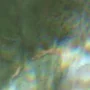
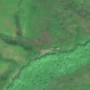

1,1 ha de pădure schimbată lângă Nadăș
Între vara lui 2025 și 17 aprilie 2026, pe aproximativ 1,1 ha de pădure din comuna Tauț, lângă Nadăș, județul Arad, imaginile Sentinel-2 arată că vegetația a dispărut sau s-a schimbat puternic. E o schimbare care merită verificată.
Autorizația de tăiere
de confirmat pe poze
N-am găsit o autorizație care să acopere zona, dar nu putem spune ce s-a întâmplat aici: analistul AI fie n-a văzut încă pozele, fie le-a văzut și nu e sigur. Nu dăm roșu pe o bănuială, și nici nu spunem că e în regulă. Analistul înclină spre altceva decât o tăiere, dar nu e sigur. Printre astfel de zone au fost și tăieri reale.
Ce se vede în poze: În poza detaliată zona marcată era acoperită de pădure deasă. În poza «după» zona arată aproape la fel ca pădurea din jur, doar puțin mai maronie, iar în imaginea largă mai multe versante au aceleași pete maronii-violete. Nu se vede un loc golaș cu margini clare, așa că diferența pare să țină de sezon (frunzele apar mai târziu pe unele versante).


Înainte și după: Copernicus Sentinel-2, 10 m pe pixel, conturul zonei cu portocaliu. Poza detaliată (Esri World Imagery) e de acum 1–4 ani: arată ce era acolo înainte, nu tăierea.
Pe scurt
- Identificator
- 20260417_46198_21938
- Locul
- Nadăș, comuna Tauț, județul Arad (SIRUTA 12457)
- Coordonate (centru)
- 46.19779, 21.93806 · Google Maps · OpenStreetMap
- Suprafața
- 1,1 ha (din pixeli de 10 m; ± câțiva pixeli pe margine)
- Pădurea întreagă
- în vara lui 2025 (de atunci, nori sau iarnă)
- Prima imagine cu schimbarea
- 17 aprilie 2026
- Imagini în care se vede schimbarea
- 4
- Cât de sigur e semnalul din satelit
- scăzută
- Terenul
- în afara amenajamentelor silvice publicate (pășune, mal de apă sau pădure privată fără amenajament în registru)
- Arie protejată
- Drocea - Zarand
- Pădure pierdută în jur, alți ani
- 2012 (Hansen)
- Garda Forestieră
- Oradea
Dacă vrei să verifici sau să sesizezi
- Pădurile din județul Arad sunt în grija Gărzii Forestiere Oradea, care controlează tăierile și dă amenzile.
- Formularul Gărzii Forestiere Naționale primește sesizări și fără nume. Trimite linkul acestei pagini, coordonatele și pozele. Dacă tăierea e în desfășurare, sună la 112.
- Autorizațiile și transporturile de lemn se pot căuta în Inspectorul Pădurii.
Pagina arată ce se vede din satelit și ce scrie în registrul public; nu e o dovadă în sine.
Din alte surse
- presă (probabilă): Știre despre tăieri la Nadăș, Arad, 21.05.2026: „Pădurea Nadăș revine definitiv statului după 20 de ani de procese. Sunt peste 4.600 de hectare de fond forestier - Spotmedia.ro” Nu e sigur că e vorba de aceeași tăiere. sursa
- presă (probabilă): Știre despre tăieri la Nadăș, Arad, 21.05.2026: „DECIZIE Succes după 20 de ani. Romsilva recuperează peste 4.600 de hectare din pădurea Nadăș, după două decenii de litigii - Profit.ro” Nu e sigur că e vorba de aceeași tăiere. sursa
Cum citezi zona
Linkul acestei pagini nu se schimbă. Dacă zona iese vreodată de pe hartă, pagina rămâne, cu data și cu ce știam despre ea.
Pădurea RO, zona 20260417_46198_21938: 1,1 ha, Nadăș, comuna Tauț, județul Arad; schimbare văzută din satelit între vara lui 2025 și 17 aprilie 2026. https://iliemihai.github.io/padurea-ro/zona/20260417_46198_21938/ (consultat la [data]). Date: CC BY 4.0.
Datele zonei: GeoJSON · toate zonele: date deschise · licența CC BY 4.0.
Istoricul zonei pe hartă
Starea se poate schimba când registrul publică o autorizație sau când analistul vede poze mai bune. O ținem aici, ca un link citat să arate și ce spuneam atunci.
Pe hartă cel târziu din 5 noiembrie 2026.
- 5 noiembrie 2026 – azi · de confirmat pe poze
Detalii tehnice, pentru verificare
De ce acest nivel de încredere:
- văzută schimbată în 4 imagini diferite
- pădurea din jur e neschimbată
- ultima dată am văzut-o intactă în vara lui 2025 (de atunci, nori sau zăpadă)
- fără părerea AI
Ce a văzut analistul cu context: Poza detaliată din 2024 arată coronament închis (80% în 2000, 99% copaci în WorldCover). În Sentinel-2 din 30.04.2026 conturul are o nuanță roz-brună slabă, fără margini ascuțite, fără sol dezgolit evident, iar petele cu aceeași nuanță apar și departe de contur în vizualizarea de 2 km, ceea ce indică fenologie de primăvară. Imaginea «înainte» din august 2025 este afectată de ceață și artefacte, deci comparația este slabă; nu există autorizație de tăiere în 5 km, dar lipsa unei tăieri vizibile nu permite acuzația de tăiere rasă.
- Placa Sentinel-2
- 34TES
- NDVI de referință
- 0.86
- NBR de referință
- 0.64
- Scăderea în pădurea din jur
- 0.0
- Persistență
- 0.96
- NDVI / NBR după
- 0.476 / 0.087
- Analistul cu context (model)
- sezon_nori · 0.45
Cum se calculează fiecare: metodologia.
Pune harta zonei într-un articol
Copiază codul în articol (merge în majoritatea site-urilor de știri). Sau pune doar linkul: WhatsApp, Facebook și X arată singure poza zonei.